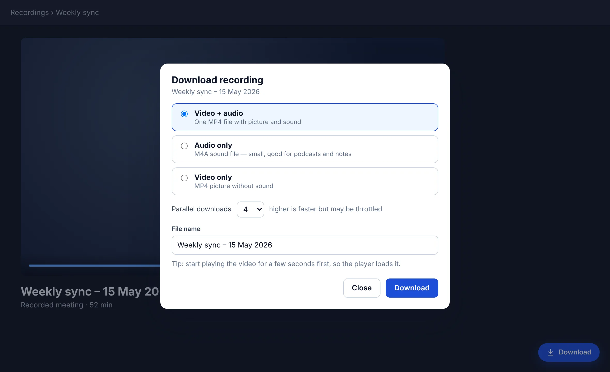
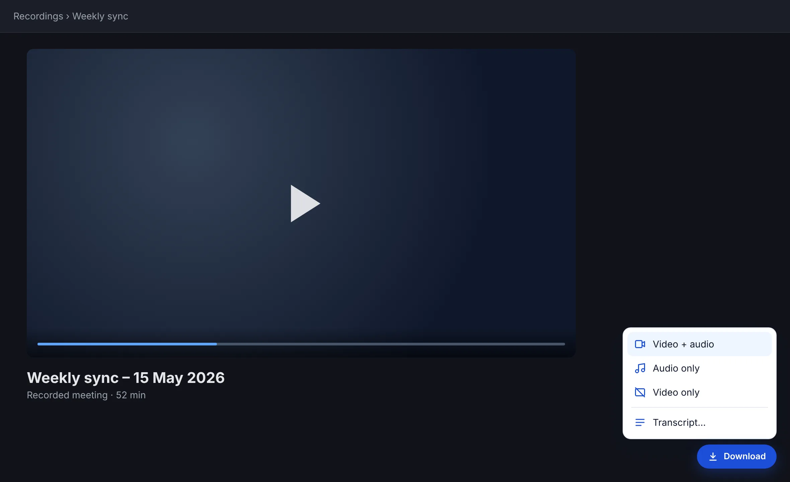

Teams, SharePoint ve Stream kayıtlarını video, ses ya da transkript olarak kaydet. İndirme butonu kapalı olsa bile.
Sürüm 2.1.0 · Hiçbir veri dışarı gönderilmez

Kaydı aç, sağ alttaki Download butonuna bas, ne istediğini seç. Gerisini eklenti halleder.
Görüntü ve sesi tek bir MP4 dosyasında, oynatıcının sunduğu en yüksek kalitede.
Küçük bir M4A dosyası. Yolda dinlemek ya da not almak için ideal.
TXT, VTT, SRT veya JSON. Konuşmacı adları ve zaman damgaları isteğe bağlı, canlı önizlemeli.
Çıkan dosya normal bir MP4. VLC, Windows Medya Oynatıcı ve QuickTime'da rahatça sarılır.
Parçaları paralel indirir. Microsoft yavaşlatırsa bekleyip otomatik yeniden dener.
Her şey senin tarayıcında olur. Sunucu yok, takip yok, reklam yok.

Eklenti Chrome Web Store'a gelene kadar şu şekilde kurabilirsin:
MS-Downloader.zip dosyasını indir, sağ tıklayıp Tümünü ayıkla de. Bir MS-Downloader klasörü çıkacak.
Adres çubuğuna chrome://extensions yaz (Edge'de edge://extensions) ve sağ üstten Geliştirici modunu aç.
Paketlenmemiş öğe yükle'ye bas ve MS-Downloader klasörünü seç. Pencerede dosyalar görünmez, bu normal; sadece klasörü seç.
Bir kaydı aç, birkaç saniye oynat ve sağ alttaki mavi Download butonuna bas.
Hayır. Tamamen ücretsiz ve açık kaynak.
*.sharepoint.com üzerindeki Stream / SharePoint kayıtlarında ve Teams içinde açılan kayıtlarda. Sadece zaten izleyebildiğin kayıtları indirir.
Microsoft bazı kayıtları DRM ile korur; bunlar sadece oynatılabilir, kaydedilemez. Eklenti bu durumu algılar ve sana söyler.
Transkript sadece toplantı sırasında transkripsiyon açıldıysa vardır.
Hayır. Eklenti sadece Microsoft'un zaten kullandığı adreslerle konuşur; her şey senin tarayıcında olur.
Evet, Apache 2.0 lisansıyla. Paylaşırken NOTICE dosyasını ve alberbehar'ın adını korumak zorunludur.
Ücretsiz indir, iki dakikada kur, toplantılarını istediğin yerde izle.
Chrome'a ekle